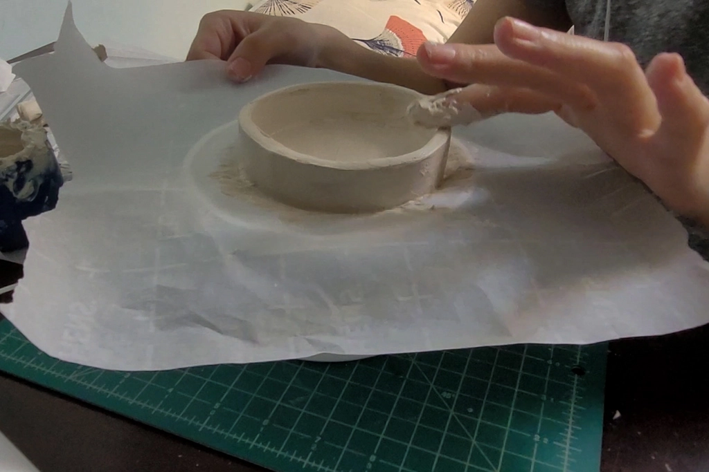
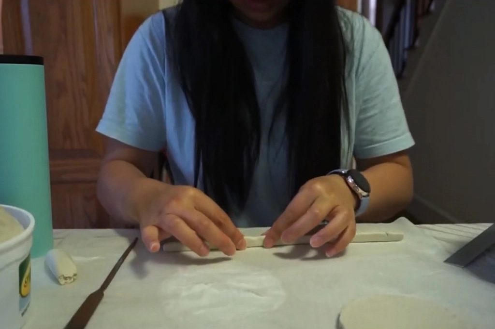
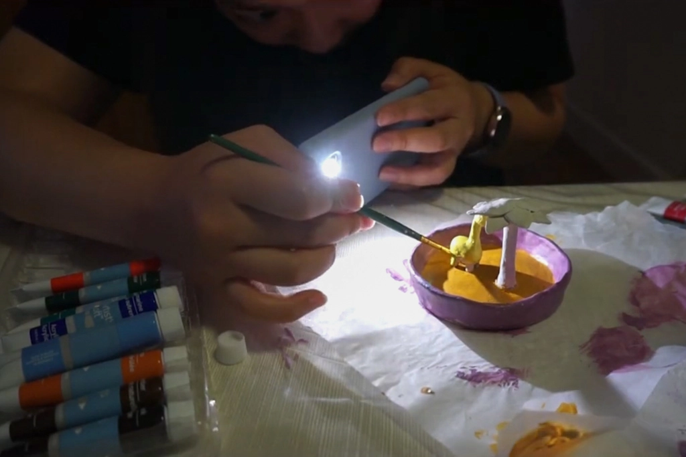
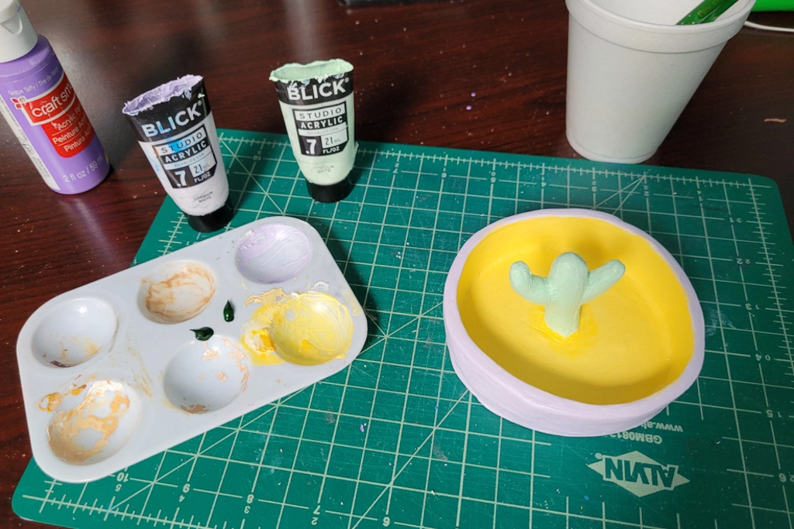

Air Dry Clay Trinket Dishes
Jun 13 - Written by Bonnie and Emily
We love collecting cute ceramic pieces so we took on the challenge of making our own with air dry clay!
If you’re looking for a fun afternoon activity and are in need of somewhere to place your keys, jewelry, hair accessories, etc., you’ve come to the right place. With just a few materials, you can create your own personalized pottery pieces that fit your every need! If you’re like us and don’t necessarily have the right tools to work with, that’s perfectly fine, just use what you’ve got. Bonnie didn’t have an exacto knife so she used a letter opener instead, but in all honesty your fingers are your best tool.
What You’ll Need
- Air Dry Clay
- Glaze
- Paint Brushes
- Acrylic Paint
- Parchment Paper or Wax Paper
- Knife (optional)
- Clay Tools (optional)
The first step is to make some slip. If you’re not familiar with pottery, slip is a combination of water and clay that is used to help bond pieces of clay together. The consistency of slip is up to you but we found that a 3:1 ratio of clay to water worked quite well. As always if you find your slip too wet or dry, you can always compensate and add more clay or water as you see fit. We found that a wetter slip was helpful in smoothing out the clay but a thicker slip was good in bonding pieces of clay together. Once you have your slip made, you’re ready to move onto the fun part - molding your clay!
Now you can take out some clay and make whatever it is your heart desires. Neither one of us discussed what we were making so that it’d be a surprise in the end but we both had similar ideas on what to make. We both decided to make little trinket dishes for jewelry or whatever else fits. We both started by rolling out a slab of clay to use as our base and from there, we cut out a circle using an object as a guide. Bonnie tried a few options until she settled for a box of beads whereas Emily used one of her old ceramic pieces as her guide. Since Bonnie didn’t have a knife to cut around her object, she ended up with rough edges that she had to smooth out with some slip.
Afterwards, we both moved onto making the sides of our plates using two very similar methods. Bonnie rolled out one really long log of clay and flattened it out whereas Emily broke hers up into two but used the same method. Either way, we both ended up with similar products. To attach your pieces to the base, it’s ideal to score each piece of clay before adding your slip and joining the two pieces together. As Emily has some prior pottery experience, she reminded Bonnie of this step before she got too far into making her plate.
Once the bases were finished, it was onto the decorating stage of adding more to our plates to make them unique. Emily considered leaving hers blank and just painting something on it but in the end, she decided to continue with her original plan to add a cactus in the middle. Bonnie on the other hand chose her all time favorite animal, a giraffe! To go with her giraffe, she also made a tree to complete her little safari scene that would be perfect for her to place all her different kinds of jewelry.
When we both finished making our pieces and smoothing everything out with slip to the best of our abilities, it was time for the easiest step, letting the pieces dry. It’s best to let your piece dry out for 1-2 days, maybe more depending on the thickness of your pieces before moving onto painting them. We let ours sit for about a day or two before painting. Now during this time, we highly recommend checking on your piece periodically to check for any cracks because if you notice any, you can add a bit of slip to repair it.
Emily decided to get a small piece of sandpaper to lightly sand her piece down before painting but this step is definitely not necessary if you don't have any. We chose to paint our pieces with a bit of acrylic paint but if you don’t have any, there are some other creative methods that we’ve seen online such as using coffee grounds to add both color and texture. No matter what you choose, we recommend going with something that's not very wet as adding too much water to your dried pieces will cause them to soften again over time.
When you’re all done painting, you can add a coat or two of glaze to seal everything in and make your piece a bit more water resistant. If you have no intention of getting your piece wet and like the matte look it has, you can skip this step but we chose to glaze ours and make them nice and shiny. The glaze we got was triple thick so it didn't require more than one coat but you can definitely add as many coats as you see fit. We also don't have any intentions of getting our pieces wet so we didn’t have to be so careful with the glaze. Another thing we noticed with the glaze is that you should work quickly and carefully with it as brushing it too much in one area can cause your paint to chip and shift.
If you choose to glaze your piece, follow the instructions on your glaze and allow your piece to dry for the designated time. We let ours sit for 48 hours to ensure that they were 100% dry and we can use it without fear of messing anything up.


Now that you have your finished piece, it's ready to use! Air dry clay is the easiest and perfect solution to making some cute home decor. The options are endless, we both made some trinket plates dishes but you can make candle holders, pots, or even sculptures.